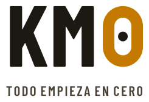
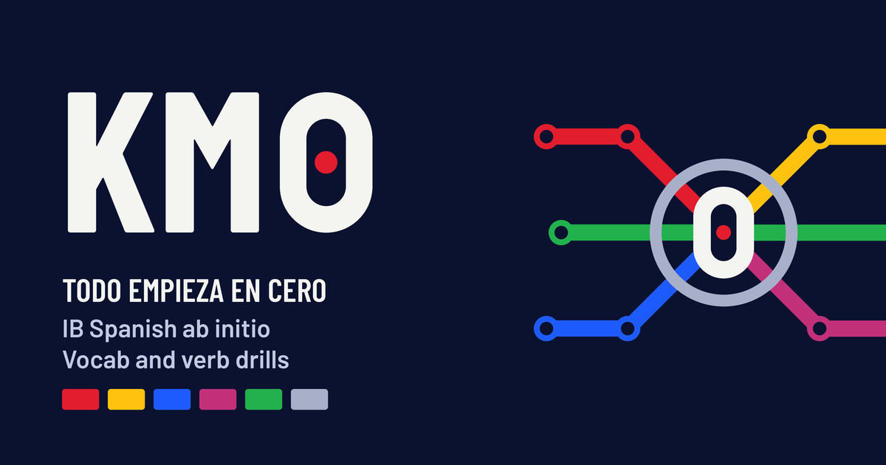
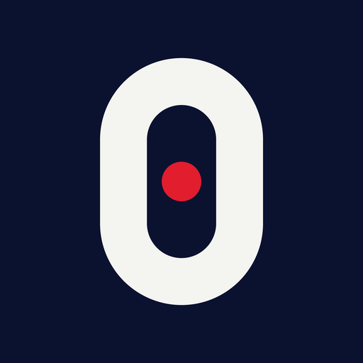

KM0 is a practice app for IB Spanish ab initio: vocabulary and verb drills on a metro map. This page explains how the identity works, so anything new looks and sounds like KM0.
KM0 is short for kilómetro cero. In Madrid's Puerta del Sol, a plaque in the pavement marks the point every one of Spain's radial roads is measured from. It is the place you start from.
The app works the same way. Every theme is a line, every list is a station, and every line runs out of Sol, the real home of kilómetro cero. Say it the Spanish way, ka eme cero, or just "K-M-zero".
The symbol is a tall zero with a scarlet dot at its centre: a dotted zero, the old sign-maker's way of telling 0 from O. The dot is the origin, kilómetro cero itself. It is the only scarlet in the mark.
The wordmark sets KM in Barlow Condensed Bold, with the Zero standing in for the 0. The lockup adds the tagline underneath, tracked wide. Letters and Zero take the ink of the ground; the dot stays scarlet on both.


Three colours carry the brand. The six line colours belong to the themes and only appear where a theme is meant.
#0B1230#F4F4F0#E21D2D#E21D2D#FFC20E#1E5BFF#C2307A#22B14C#A7B0C8Barlow Condensed is the signage voice: anything you navigate by, press or read from a distance. Barlow is for reading and typing. Numbers are always tabular.
KM0 talks like a platform announcement: short, direct, useful. Spanish leads and English supports. One idea per line. Numbers do the talking. No hype and no emoji.
Próxima parada: Paper 1 · 2 días
Wrong answer? Retype it. It comes back later.
Todo empieza en cero.
Hey there! Ready to crush your exams?!
Oops, looks like that wasn't quite right…
Unlock your Spanish potential today.
The link preview and the app icon, as they appear when KM0 is shared or added to a home screen.

